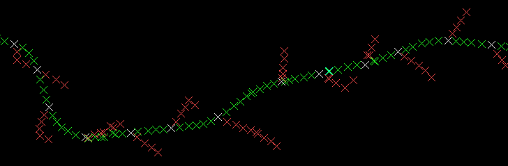
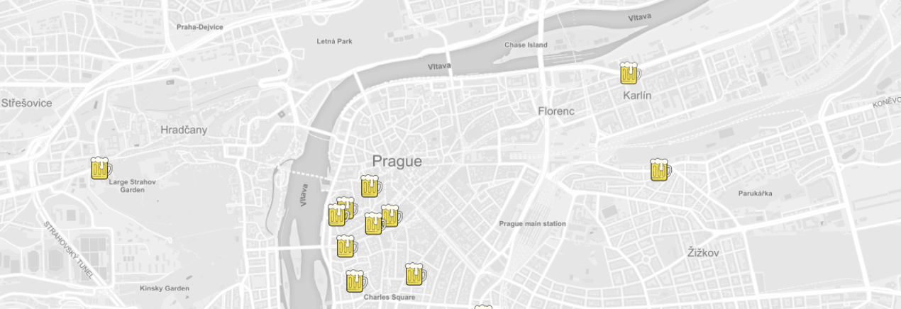
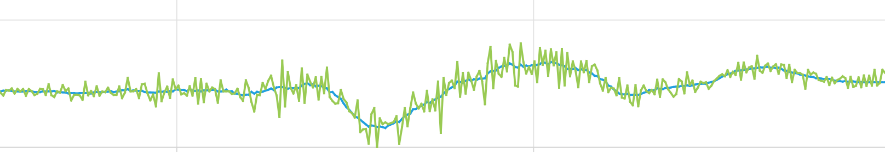

I am a software developer with 2 years' work experience in C++ and interest in map making and all things geospatial. Ever since I was a child I loved drawing maps and making plans. I started my programming journey at 15 when I signed up for Python seminars at school.
It only made sense to combine these two and study Geodesy, Cartography and Geomatics at University, choosing Geomatics for my Master's degree afterwards. I took extra courses titled Design and Analysis of Algorithms, Computer Networks and Informatics 4. I took the course on Algorithms in Digital Cartography a year early because I was eager to better my programming skills.
I live for the highs when everything works and the lows motivate me to be better at what I do. I have now decided to set off on an adventure and am currently in Canada, working as a Software Engineer.
As of August 2019 I have the absolute pleasure to be one of the uploaders for the GNU Gama project lead by prof. Ing. Aleš Čepek, CSc. GNU Gama is a set of programs for computation and adjustment of geodetic networks. I became familiar with the project while working on my postgraduate thesis (see below) and decided to continue contributing to the project even after completing my degree. As an uploader I can release new versions, push changes to the main repository and am responsible for the Windows binaries for the project.
Combinatorial computation of coordinates in the GNU Gama project - In the thesis, I proposed and implemented new methods of calculating approximate coordinates in a way that fixed the existing computation of long traverses and helped eliminate calculation with measurements containing gross errors. The code found its way into the official release of GNU Gama v2.05. Below is a visual sample of what I have fixed - before is red and after is green!
This is a map showing the user's location and the location of Prague's microbreweries, along with additional information about them. This was a fun little project to learn about Leaflet, Mapbox and JavaScript.
Smoothing of spectrometric data - A console application that takes spectrometric data in xml format as input and outputs their smoothed coordinates depending on which filter and parameters were set. The thesis included comparison of the output data and different methods of smoothing. The data was then used for research on recognition of different materials according to their spectrometry. You can see an example of data (green) smoothed by my program below (blue line).
 In this 4 week long online course, I had the opportunty to familiarize myself more with Esri's ArcGIS Online and the various options for creating and publishing stories, web maps and apps. As part of this course, I created a Geo App showing various information about Toronto's neighbourhoods. I used the Toronto Wellbeing open data and Esri's Web App Builder to experiment with the JavaScript API to tweak the app.
You can read more about the MOOC here.
This 6 week long course focused on the basics of cartography and creating maps with ArcGIS Pro. It was a great way to refresh my mapping skills and to try out new Esri products I wouldn't otherwise have access to. The course included lessons on generalization, coordinate systems and 3D Scenes among other things. Below is a snippet of a map I created as part of a lesson on labelling.
You can read more about the MOOC here.
Toronto, ON
+1 (647) 614-3145
petramillarova@gmail.com
millapet@gnu.org